Each skill is a ladder: a fully worked example in the solid-framed box, then four YOUR TURN questions in the dashed box — same skill, new numbers, no help. Work all four before checking the gray check: line; a tracker tick needs all four right first time. A ten-question mixed set follows Ladder 14.
What is in and what is out. §18.1–18.4 and §18.7 are assessed (CED 9.8–9.11). §18.5–18.6 (batteries, corrosion) and §18.8 (commercial electrolysis) are not on the CED and are not treated here — skip those pages of Zumdahl. Two things the CED explicitly will not ask you. First: “Labeling an electrode as positive or negative will not be assessed” (9.8). Learn anode and cathode, which are always assessed; the \(+\)/\(-\) signs flip between cell types and the exam sensibly avoids them. Second: “The meaning of the terms `reducing agent' and `oxidizing agent' will not be assessed” (4.7). Say “\(\ce{Zn}\) is oxidised” rather than “\(\ce{Zn}\) is the reducing agent” and you are always safe. This chapter is Chapter 17 in different units. \(\Delta G^{\circ} = -nFE^{\circ}\) is the bridge, and once you have it, every “is this favoured?” question you already know how to answer in free energy you can answer in volts. Ladder 9 is the hinge of the whole chapter.Ladder 1 • Oxidation numbers
ZUM §18.1Everything in this chapter starts with knowing which atoms changed. Oxidation numbers are the bookkeeping that tells you.
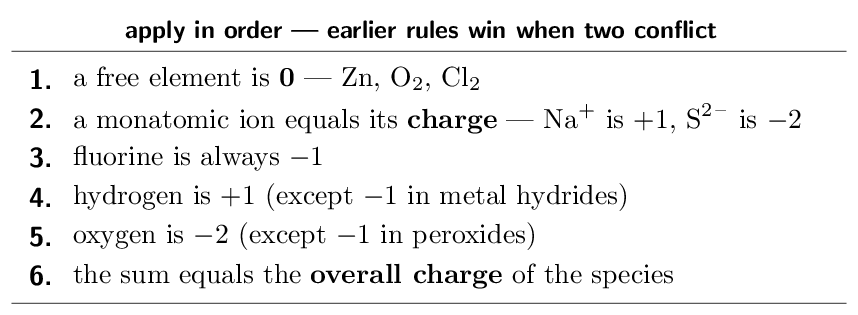
Oxygen is \(-2\) and there are four of them, so they contribute \(-8\). The whole ion carries \(-1\), so by rule 6: \[ x + (-8) = -1 \quad\Longrightarrow\quad x = \mathbf{+7} \]
(b) Find the oxidation number of Cr in \(\ce{Cr2O7^2-}\).Seven oxygens give \(-14\); the ion is \(-2\): \[ 2x - 14 = -2 \quad\Longrightarrow\quad 2x = 12 \quad\Longrightarrow\quad x = \mathbf{+6} \] Note the division by 2 — the answer is per chromium atom, not for both together.
(c) Find the oxidation number of S in \(\ce{H2SO4}\).Two hydrogens give \(+2\), four oxygens give \(-8\), and the molecule is neutral: \[ 2 + x - 8 = 0 \quad\Longrightarrow\quad x = \mathbf{+6} \]
Why this matters here. An element whose oxidation number rises has been oxidised; one whose number falls has been reduced. That is the only definition you need, and it works even when no oxygen or hydrogen is involved. The mnemonic, if you want one. OIL RIG: Oxidation Is Loss of electrons, Reduction Is Gain. Losing electrons makes an atom more positive, which is exactly why its oxidation number rises.- Find the oxidation number of N in \(\ce{NO3-}\).
- Find the oxidation number of S in \(\ce{SO3^2-}\).
- Find the oxidation number of Cl in \(\ce{ClO4-}\).
- An element's oxidation number goes from \(+2\) to \(+4\). Was it
oxidised or reduced? oxidised
(a) \(+5\) (b) \(+4\) (c) \(+7\) (d) oxidised
Ladder 2 • Half-reactions and balancing in acid
ZUM §18.1Split the reaction into the part that loses electrons and the part that gains them, balance each separately, then recombine.
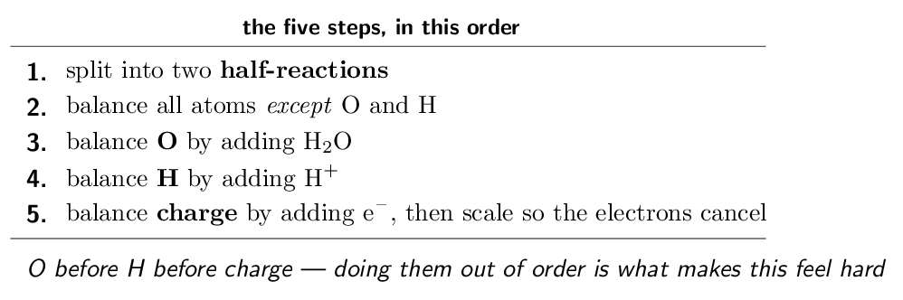
- Balance the half-reaction \(\ce{Cr2O7^2- -> Cr^3+}\) in acid.
\(\ce{Cr2O7^2- + 14H+ + 6e- -> 2Cr^3+ + 7H2O}\)
- How many electrons appear in that half-reaction, and on which
side? 6, on the left
- Balance \(\ce{Zn -> Zn^2+}\) as a half-reaction.
\(\ce{Zn -> Zn^2+ + 2e-}\)
- Why must charge balance as well as atoms?
electrons are conserved
(a) \(\ce{Cr2O7^2- + 14H+ + 6e- -> 2Cr^3+ + 7H2O}\) (b) 6, on the left (c) \(\ce{Zn -> Zn^2+ + 2e-}\) (d) electrons are conserved
Ladder 3 • Balancing in base
ZUM §18.1One extra move at the end: neutralise the \(\ce{H+}\) you added.
- After acid-balancing, an equation has 6 \(\ce{H+}\) on the left.
How many \(\ce{OH-}\) do you add, and where?
6, to both sides
- What do the \(\ce{H+}\) and \(\ce{OH-}\) combine to form?
\(\ce{H2O}\)
- Why is it valid to add \(\ce{OH-}\) to both sides?
adding equally to both sides preserves the equation
- In basic solution, which species should not appear in
your final answer? \(\ce{H+}\)
(a) 6, to both sides (b) \(\ce{H2O}\) (c) adding equally to both sides preserves the equation (d) \(\ce{H+}\)
Ladder 4 • The galvanic cell
ZUM §18.1A galvanic (voltaic) cell separates the two half-reactions so the electrons must travel through a wire — which is what makes it useful.
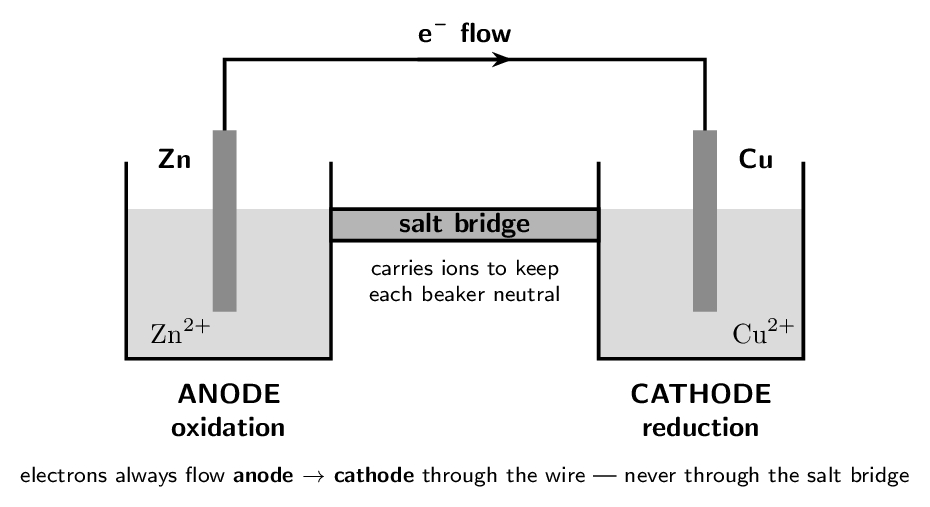
CED topic 9.8's exclusion: “Labeling an electrode as positive or negative will not be assessed on the AP Exam.” Good — the signs reverse between galvanic and electrolytic cells and cause more confusion than they resolve. What is assessed, and never changes: oxidation always happens at the anode, reduction always at the cathode, in every cell of every kind. Learn that pair and you never need the signs.
- At which electrode does oxidation occur, in any cell?
the anode
- Which way do electrons flow through the external wire?
anode to cathode
- What would happen without a salt bridge?
charge builds up and the reaction stops
- Does the anode of a zinc–copper cell gain or lose mass?
Explain. loses — \(\ce{Zn}\) dissolves
(a) the anode (b) anode to cathode (c) charge builds up and the reaction stops (d) loses — \(\ce{Zn}\) dissolves
Ladder 5 • Cell notation
ZUM §18.1A one-line shorthand for a whole cell diagram. It has a fixed grammar.
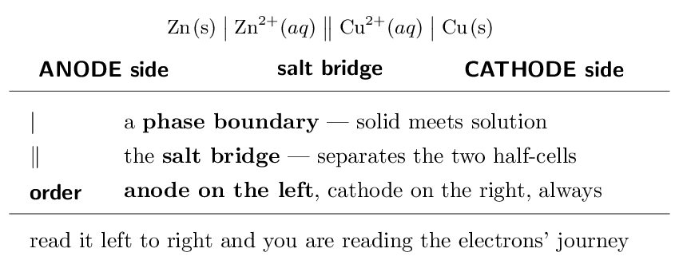
Magnesium is oxidised, so it is the anode and goes on the left; silver is reduced, so it is the cathode and goes on the right: \[ \ce{Mg(s)} \;\big|\; \ce{Mg^2+}(aq) \;\big\|\; \ce{Ag+}(aq) \;\big|\; \ce{Ag(s)} \]
(b) Read \(\ce{Fe(s)}|\ce{Fe^2+}\|\ce{Cu^2+}|\ce{Cu(s)}\).Iron is on the left, so iron is the anode and is oxidised: \(\ce{Fe -> Fe^2+ + 2e-}\). Copper is on the right, so \(\ce{Cu^2+}\) is reduced: \(\ce{Cu^2+ + 2e- -> Cu}\). Overall: \(\ce{Fe + Cu^2+ -> Fe^2+ + Cu}\).
When a species is not a solid, you need an inert electrode. For a half-cell like \(\ce{Fe^3+}/\ce{Fe^2+}\) — both species dissolved — there is no metal to serve as the electrode, so platinum is used and written into the notation: \[ \ce{Pt(s)} \;\big|\; \ce{Fe^2+}, \ce{Fe^3+} \;\big\|\; \ldots \] The comma separates two species in the same phase; the single bar is reserved for a genuine phase boundary. The one rule that prevents most errors: anode on the left. Everything else follows from it — and if you write the cell backwards, your \(E^{\circ}_{\text{cell}}\) in Ladder 7 will come out negative for a reaction that is actually favoured.- In cell notation, which electrode is written on the left?
the anode
- What does the double bar represent? the salt bridge
- Write the notation for a cell with \(\ce{Ni -> Ni^2+ + 2e-}\) and
\(\ce{Ag+ + e- -> Ag}\). \(\ce{Ni}|\ce{Ni^2+}\|\ce{Ag+}|\ce{Ag}\)
- Why is an inert platinum electrode sometimes needed?
when no solid is present to conduct
(a) the anode (b) the salt bridge (c) \(\ce{Ni}|\ce{Ni^2+}\|\ce{Ag+}|\ce{Ag}\) (d) when no solid is present to conduct
Ladder 6 • Standard reduction potentials
ZUM §18.2Every half-reaction is tabulated as a reduction, measured against the hydrogen electrode, which is defined as exactly zero.
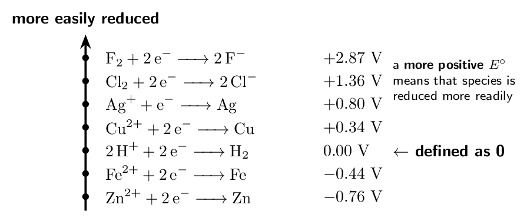
- Which is more readily reduced, \(\ce{Ag+}\) or \(\ce{Cu^2+}\)?
\(\ce{Ag+}\)
- Give \(E^{\circ}\) for \(\ce{Zn -> Zn^2+ + 2e-}\).
- Give \(E^{\circ}\) for \(\ce{2Zn -> 2Zn^2+ + 4e-}\).
still \(+0.76\) V
- Why is the hydrogen half-reaction exactly \(0.00\) V?
it is a defined reference
(a) \(\ce{Ag+}\) (b) \(+0.76\) V (c) still \(+0.76\) V (d) it is a defined reference
Ladder 7 • Calculating \(E^{\circ}_{\text{cell}}\)
ZUM §18.2 \[ E^{\circ}_{\text{cell}} = E^{\circ}_{\text{cathode}} - E^{\circ}_{\text{anode}} \]where both values are read straight off the table as reductions — no sign flipping needed.
- Find \(E^{\circ}_{\text{cell}}\) for a \(\ce{Zn}\)/\(\ce{Ag}\) cell.
- Find \(E^{\circ}_{\text{cell}}\) for a \(\ce{Fe}\)/\(\ce{Cu}\) cell.
- In the \(\ce{Fe}\)/\(\ce{Cu}\) cell, which metal is the anode?
iron
- If you doubled every coefficient, what happens to
\(E^{\circ}_{\text{cell}}\)? nothing — it is unchanged
(a) \(+1.56\) V (b) \(+0.78\) V (c) iron (d) nothing — it is unchanged
Ladder 8 • Spontaneity from \(E^{\circ}_{\text{cell}}\)
ZUM §18.3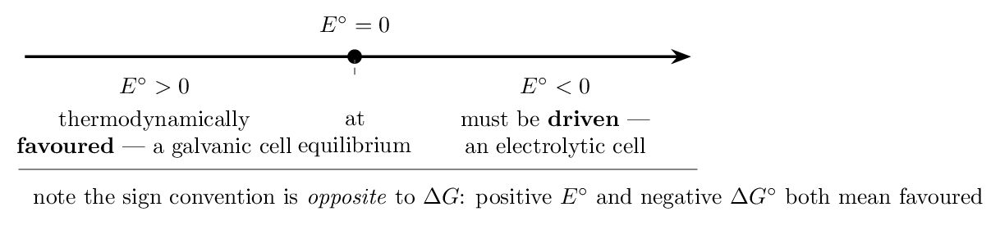
- Will zinc metal displace \(\ce{Ag+}\) from solution? Show the
potential. yes, \(+1.56\) V
- Will silver metal displace \(\ce{Cu^2+}\)? Show the potential.
no, \(-0.46\) V
- What is the sign of \(\Delta G^{\circ}\) when \(E^{\circ}\) is
positive? negative
- Why do a positive \(E^{\circ}\) and a negative \(\Delta G^{\circ}\)
mean the same thing? the minus sign in \(\Delta G = -nFE\)
(a) yes, \(+1.56\) V (b) no, \(-0.46\) V (c) negative (d) the minus sign in \(\Delta G = -nFE\)
Ladder 9 • \(\Delta G^{\circ} = -nFE^{\circ}\)
ZUM §18.3The hinge of the chapter — the equation that makes electrochemistry a branch of Chapter 17.
\[ \Delta G^{\circ} = -n F E^{\circ} \qquad F = 96485\,\mathrm{C/mol} \] \(n\) is the number of moles of electrons transferred in the balanced equation.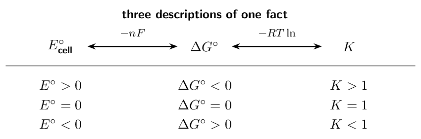
Negative, as a positive \(E^{\circ}\) requires — and large, which is why this cell is a usable battery.
Units check. A volt is a joule per coulomb, so \(\text{mol} \times \text{C/mol} \times \text{J/C}\) leaves joules. Convert to kilojoules at the end; forgetting to leaves an answer a thousand times too large. (b) A reaction transferring 2 mol of electrons has \(\Delta G^{\circ} = -96.5\,\mathrm{kJ}\). Find \(E^{\circ}\).Rearrange: \[ E^{\circ} = \frac{-\Delta G^{\circ}}{nF} = \frac{96500}{(2)(96485)} = \mathbf{+0.500\;\text{V}} \] Note the numbers were chosen so \(F\) nearly cancels — exam items often are.
Finding \(n\) is the step people skip. It is the number of electrons that actually cancel when you combine the half-reactions — not the number in either half alone. For \(\ce{2Al + 3Cu^2+ -> 2Al^3+ + 3Cu}\), aluminium gives up 3 each and copper takes 2 each, so the balanced equation transfers \(2 \times 3 = 6\) moles of electrons: \(n = 6\).- \(E^{\circ} = +0.50\) V and \(n = 2\). Find \(\Delta G^{\circ}\) in
kJ.
- \(E^{\circ} = -0.25\) V and \(n = 1\). Find \(\Delta G^{\circ}\) and
say whether it is favoured. +24.1 kJ, not favoured
- For \(\ce{2Al + 3Cu^2+ -> 2Al^3+ + 3Cu}\), what is \(n\)?
- Why does a positive \(E^{\circ}\) always give a negative
\(\Delta G^{\circ}\)? the minus sign, with \(n\) and \(F\) positive
(a) -96.5 kJ (b) +24.1 kJ, not favoured (c) 6 (d) the minus sign, with \(n\) and \(F\) positive
Ladder 10 • \(E^{\circ}\) and \(K\)
ZUM §18.3Combine Ladder 9 with Chapter 17's \(\Delta G^{\circ} = -RT\ln K\) and the free energy drops out:
\[ E^{\circ} = \frac{0.0592}{n}\,\log K \qquad\text{at 298\,\mathrm{K}} \]Rearrange for \(\log K\): \[ \log K = \frac{n E^{\circ}}{0.0592} = \frac{(2)(1.10)}{0.0592} = \frac{2.20}{0.0592} = 37.2 \] \[ K = 10^{37.2} \approx \mathbf{10^{37}} \]
That is an enormous number, and it should be. A cell potential of 1.10 V is large, so the reaction runs essentially to completion — which is why the cell delivers current until one reactant is exhausted rather than fading to an equilibrium mixture. Notice how little voltage it takes. Just 1.10 V corresponds to \(K \approx 10^{37}\). The logarithm compresses ferociously: every \(0.0592/n\) volts is one power of ten in \(K\). A cell with \(E^{\circ} = 0.10\) V and \(n = 2\) has \(\log K = 3.4\), so \(K \approx 10^{3}\) — still product-favoured, but a billion billion billion times less so. Where the \(0.0592\) comes from. It is \(2.303\,RT/F\) evaluated at 25 °C — that is 298.15 K, which is why the constant is \(0.0592\) and not the \(0.0591\) you get from a rounded 298 K. It is a temperature-specific shortcut, so state the assumption if a question gives you a different temperature. Sanity check, always. Positive \(E^{\circ}\) gives \(\log K > 0\), so \(K > 1\) and products are favoured. Negative \(E^{\circ}\) gives \(K < 1\). The three-way consistency of Ladder 9's figure means any two of \(E^{\circ}\), \(\Delta G^{\circ}\) and \(K\) let you check the third.- \(E^{\circ} = +0.0592\) V and \(n = 1\). Find \(\log K\) and \(K\).
\(\log K = 1\), \(K = 10\)
- \(E^{\circ} = +0.30\) V and \(n = 2\). Find \(\log K\).
\(\log K = 10.1\)
- If \(E^{\circ}\) is negative, is \(K\) greater or less than 1?
less than 1
- Why is the constant \(0.0592\) only valid at
298 K? it contains \(T\)
(a) \(\log K = 1\), \(K = 10\) (b) \(\log K = 10.1\) (c) less than 1 (d) it contains \(T\)
Ladder 11 • The Nernst equation
ZUM §18.4Real cells rarely sit at standard conditions. The Nernst equation corrects \(E^{\circ}\) for the concentrations you actually have.
\[ E = E^{\circ} - \frac{0.0592}{n}\,\log Q \qquad\text{at 298\,\mathrm{K}} \]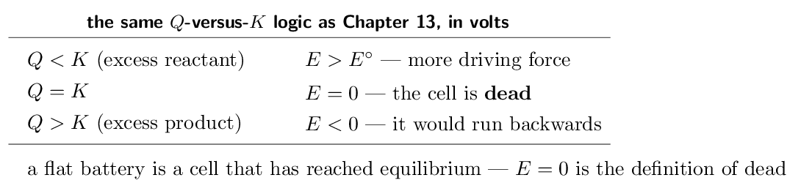
- Find \(E\) when \([\ce{Zn^2+}] = 1.0\,\mathrm{M}\) and
\([\ce{Cu^2+}] = 0.010\,\mathrm{M}\).
- Does raising \([\ce{Cu^2+}]\) raise or lower \(E\)? Why?
raises it — more reactant
- What is \(E\) when the cell reaches equilibrium?
- Which species are omitted from \(Q\), and why?
solids and pure liquids
(a) \(+1.04\) V (b) raises it — more reactant (c) 0 (d) solids and pure liquids
Ladder 12 • Concentration cells
ZUM §18.4The strangest cell in the course: identical electrodes, identical chemistry on both sides, and it still produces a voltage.
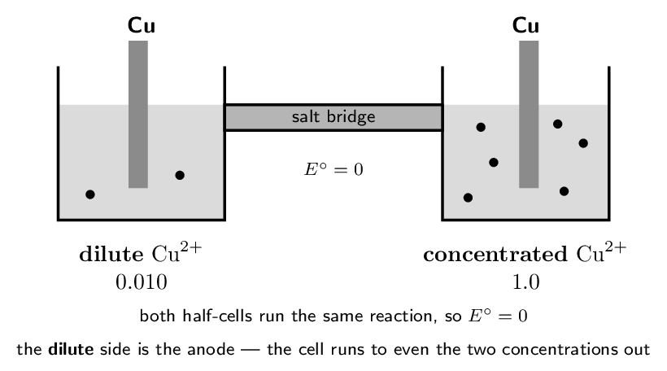
- What is \(E^{\circ}\) for any concentration cell? Why?
0 — both half-cells are identical
- In a concentration cell, which side is the anode?
the dilute side
- Find \(E\) for a copper concentration cell with
0.10 M and 1.0 M (\(n = 2\)).
- What happens to \(E\) as the two concentrations approach each
other? it falls to zero
(a) 0 — both half-cells are identical (b) the dilute side (c) \(+0.0296\) V (d) it falls to zero
Ladder 13 • Electrolytic cells
ZUM §18.7Run electricity into a cell and you can force an unfavourable reaction to happen. Same vocabulary, opposite energetics.
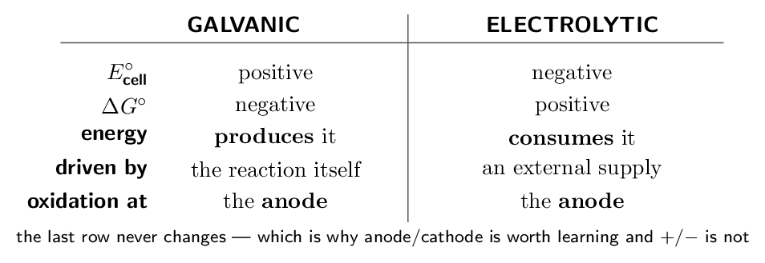
- What is the sign of \(E^{\circ}_{\text{cell}}\) for an
electrolytic cell? negative
- At which electrode does reduction occur in an electrolytic
cell? the cathode
- Why must the applied voltage exceed the cell's own potential?
to overpower the reverse tendency
- Give one reason aluminium is produced electrolytically rather
than chemically. \(\ce{Al^3+}\) is too hard to reduce chemically
(a) negative (b) the cathode (c) to overpower the reverse tendency (d) \(\ce{Al^3+}\) is too hard to reduce chemically
Ladder 14 • Faraday's law
ZUM §18.7The quantitative side of electrolysis: how much substance a given current deposits in a given time.
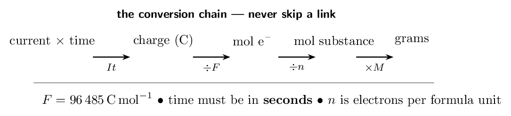
- How many coulombs pass in 20.0 min at
1.50 A?
- How many moles of electrons is that?
- What mass of copper plates out from \(\ce{Cu^2+}\)?
- Why must you divide by 2 for copper but not for silver?
\(\ce{Cu^2+}\) needs two electrons
(a) 1800 C (b) 0.0187 mol (c) 0.593 g (d) \(\ce{Cu^2+}\) needs two electrons
Mixed set • ten questions, no labels
Every question so far arrived with its ladder attached. These ten do not — and in this chapter the first decision is usually which relationship: the table, \(E^{\circ}_{\text{cell}}\), \(-nFE^{\circ}\), \((0.0592/n)\log K\), Nernst, or Faraday.
- Find the oxidation number of Mn in \(\ce{MnO2}\).
- Using \(E^{\circ}\): \(\ce{Ag+}\)/\(\ce{Ag}\) \(= +0.80\),
\(\ce{Ni^2+}\)/\(\ce{Ni}\) \(= -0.25\) V, find
\(E^{\circ}_{\text{cell}}\) for a \(\ce{Ni}\)/\(\ce{Ag}\) cell.
- For that cell, \(n = 2\). Find \(\Delta G^{\circ}\) in kJ.
- Which electrode is written on the left in cell notation, and
what happens there? the anode; oxidation
- A cell has \(E^{\circ} = -0.40\) V. Is it galvanic or
electrolytic? electrolytic
(a) \(+4\) (b) \(+1.05\) V (c) -203 kJ (d) the anode; oxidation (e) electrolytic
- A cell has \(E^{\circ} = +0.0592\) V with \(n = 2\). Find
\(\log K\).
- Balance \(\ce{Cr2O7^2- -> Cr^3+}\) in acid.
\(\ce{Cr2O7^2- + 14H+ + 6e- -> 2Cr^3+ + 7H2O}\)
- A \(\ce{Zn}\)/\(\ce{Cu}\) cell (\(E^{\circ} = 1.10\) V, \(n = 2\)) has
\([\ce{Zn^2+}] = 1.0\,\mathrm{M}\) and \([\ce{Cu^2+}] =
0.10\,\mathrm{M}\). Find \(E\).
- 1.00 A flows for 96485 s through
\(\ce{Ag+}\). How many moles of silver plate out?
- In an electrolytic cell, where does reduction occur?
the cathode
(a) 2 (b) \(\ce{Cr2O7^2- + 14H+ + 6e- -> 2Cr^3+ + 7H2O}\) (c) \(+1.07\) V (d) 1.00 mol (e) the cathode
Mastery tracker
Tick a row only if all four YOUR TURN questions were right on the first attempt. Every row is assessed, within the scope stated at the top: §18.5–18.6 and §18.8 are off the CED and are not here, and the two exclusion statements (electrode \(+\)/\(-\) labelling, agent terminology) are honoured throughout.
| First try? | Skill | Ladder | If not, re-read… |
|---|---|---|---|
| \(\square\) | oxidation numbers | 1 | the sum equals the charge |
| \(\square\) | balancing in acid | 2 | O, then H, then charge |
| \(\square\) | balancing in base | 3 | add \(\ce{OH-}\) to both sides |
| \(\square\) | the galvanic cell | 4 | An Ox, Red Cat |
| \(\square\) | cell notation | 5 | anode on the left |
| \(\square\) | reduction potentials | 6 | do not scale \(E^{\circ}\) |
| \(\square\) | \(E^{\circ}_{\text{cell}}\) | 7 | cathode minus anode |
| \(\square\) | spontaneity | 8 | signs run opposite to \(\Delta G\) |
| \(\square\) | \(\Delta G^{\circ} = -nFE^{\circ}\) | 9 | find \(n\) properly |
| \(\square\) | \(E^{\circ}\) and \(K\) | 10 | \((0.0592/n)\log K\) |
| \(\square\) | the Nernst equation | 11 | solids omitted from \(Q\) |
| \(\square\) | concentration cells | 12 | \(E^{\circ} = 0\), dilute is anode |
| \(\square\) | electrolytic cells | 13 | driven, not driving |
| \(\square\) | Faraday's law | 14 | seconds, and \(n\) per formula unit |
| \(\square\) | mixed set (8 of 10) | — | whichever it exposed |
14/14 and the mixed set: Unit 9 is complete, and with it the whole course. Every self-study chapter is now behind you.
10–13: check where the misses fall. Ladders 1–3 are redox bookkeeping carried over from Chapter 4 and repair with practice. Ladders 6–8 are sign conventions, and almost every error there is a sign rather than a misunderstanding — write “cathode minus anode” at the top of your working every time. Ladders 9–12 are Chapter 17 in new units; if they missed, the problem may be upstream.
9 or fewer: the likeliest single cause is the opposite sign conventions of \(E^{\circ}\) and \(\Delta G^{\circ}\). Re-read Ladders 8 and 9 together and fix one sentence in your head — a battery works on its own and has a positive voltage, so favoured means \(E^{\circ} > 0\) and \(\Delta G^{\circ} < 0\). Nearly everything else in this chapter follows from getting that pair the right way round.
Where this sits in the course. Unit 9 combines thermodynamics (Chapter 17) and electrochemistry (this one) into a single 7–9% unit. If both chapters are solid, you have finished the content and what remains is review.